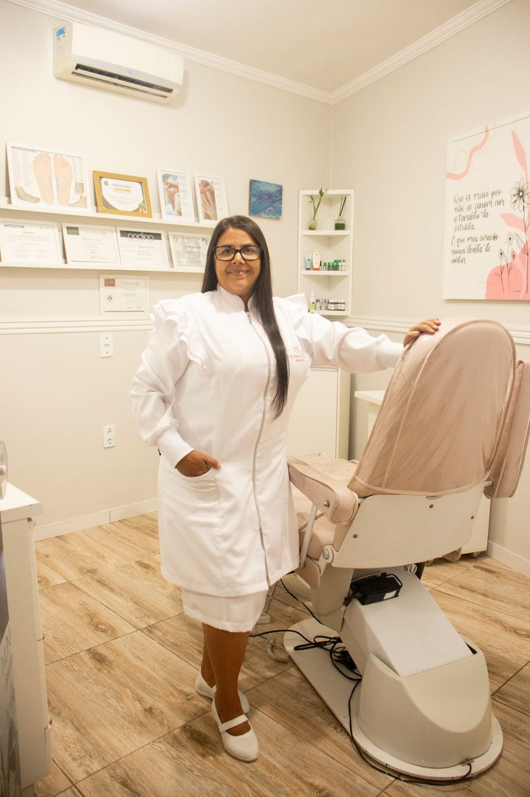
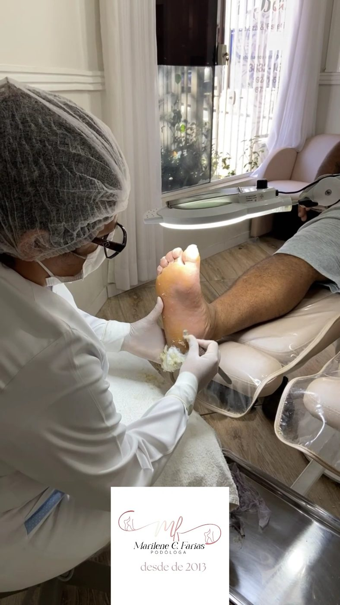
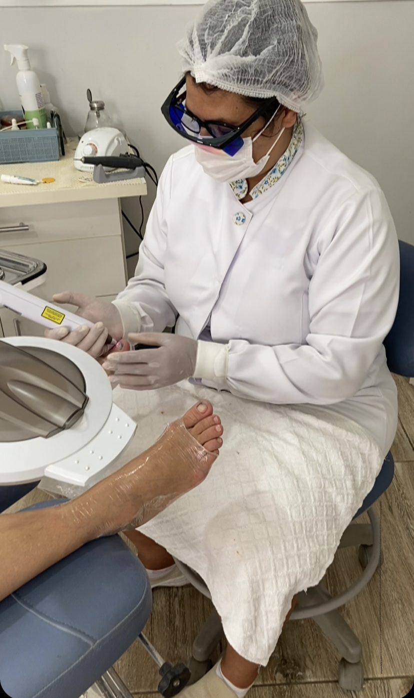
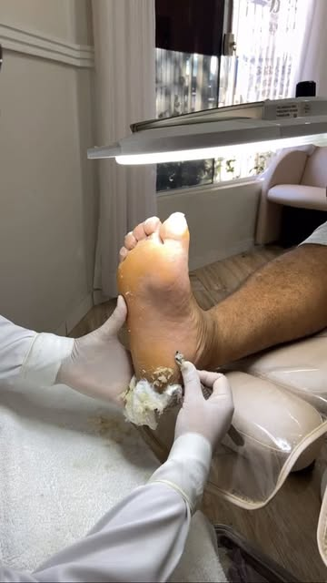

Atendimento humanizado, delicado e com técnicas modernas para tratar micoses, unhas encravadas, calos e muito mais. Seus pés merecem atenção profissional.



Sou podóloga e há mais de 10 anos dedico meu trabalho à saúde e ao bem-estar dos pés. Acredito que cada atendimento deve ser feito com carinho, delicadeza e muita responsabilidade.
No meu espaço, localizado no Star Bella em Sumaré, você encontra um ambiente acolhedor, materiais esterilizados e tratamentos modernos, como o laser para micoses, sempre com foco no seu conforto.
Tratamentos completos para devolver a saúde, o conforto e a beleza dos seus pés.
Tecnologia moderna e indolor que auxilia no combate a fungos e na recuperação das unhas.
Tratamento de micoses de unha e pele, com acompanhamento até a recuperação completa.
Alívio rápido da dor com técnicas seguras e orientações para evitar que volte a acontecer.
Remoção cuidadosa de calos e áreas espessas, deixando os pés macios e confortáveis.
Tratamento da verruga plantar com técnicas adequadas e acompanhamento profissional.
Terapia complementar por pontos na orelha que ajuda no equilíbrio, ansiedade e dores.
Massagem terapêutica nos pés que promove relaxamento e bem-estar para todo o corpo.
Atendimento especializado e preventivo, com todo cuidado que o pé diabético exige.
A micose começa silenciosa, com um leve amarelado ou uma unha mais grossa. Quanto antes ela for tratada por um profissional, mais rápido e eficaz será o resultado. Evite soluções caseiras e procure ajuda especializada.
Quero tratar minhas unhas
Acompanhe dicas, tratamentos e novidades no Instagram.
Excelente profissional. Já fui atendida por ela 3 vezes, e foi incrível. Além de ser muito gentil e delicada.CintiaAvaliação no Google
Fale comigo pelo WhatsApp e encontre o melhor horário para você.
Star Bella - Rua José Vedovatto, 751
Parque das Nações (Nova Veneza)
Sumaré - SP, 13181-250
| Segunda a sexta | 09:00 – 17:00 |
| Sábado | 09:00 – 15:00 |
| Domingo | Fechado |